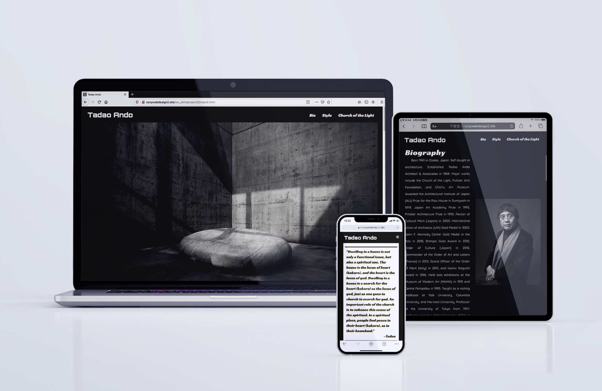

Display
网站结合安藤忠雄在建筑上对光的设计，设计了安藤忠雄的“生平”、“建筑风格”和“Quote”。

Responsive Design
响应式设计，适用于桌面、平板和手机。

安藤忠雄是日本著名的建筑设计师。他善于利用光线，并结合其独特而简单的设计，让人们进入日本禅的艺术意境。这个网页设计结合了安藤忠雄的设计特点，用简单的结构和光线来表达安藤忠雄的独特风格。
网站结合安藤忠雄在建筑上对光的设计，设计了安藤忠雄的“生平”、“建筑风格”和“Quote”。
响应式设计，适用于桌面、平板和手机。